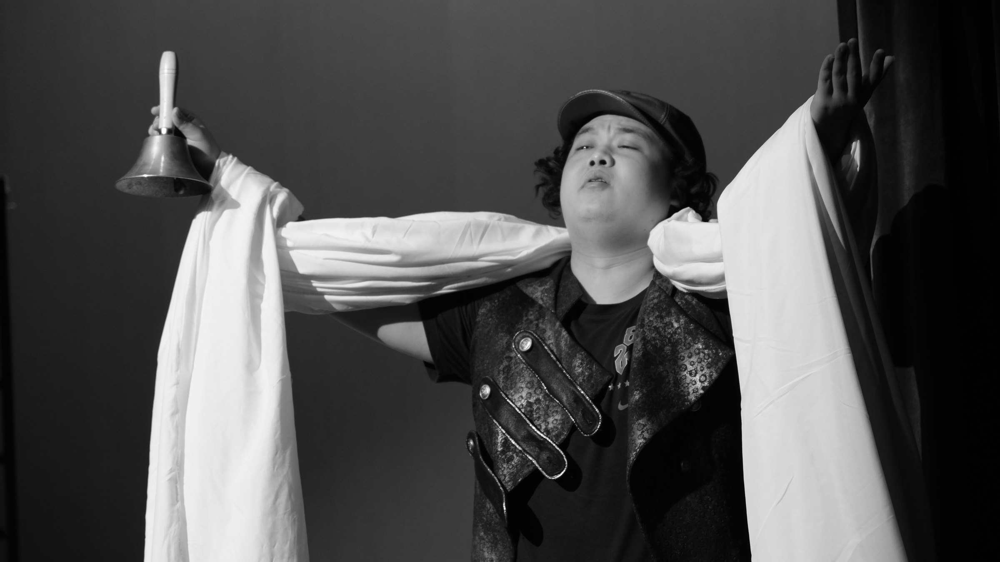
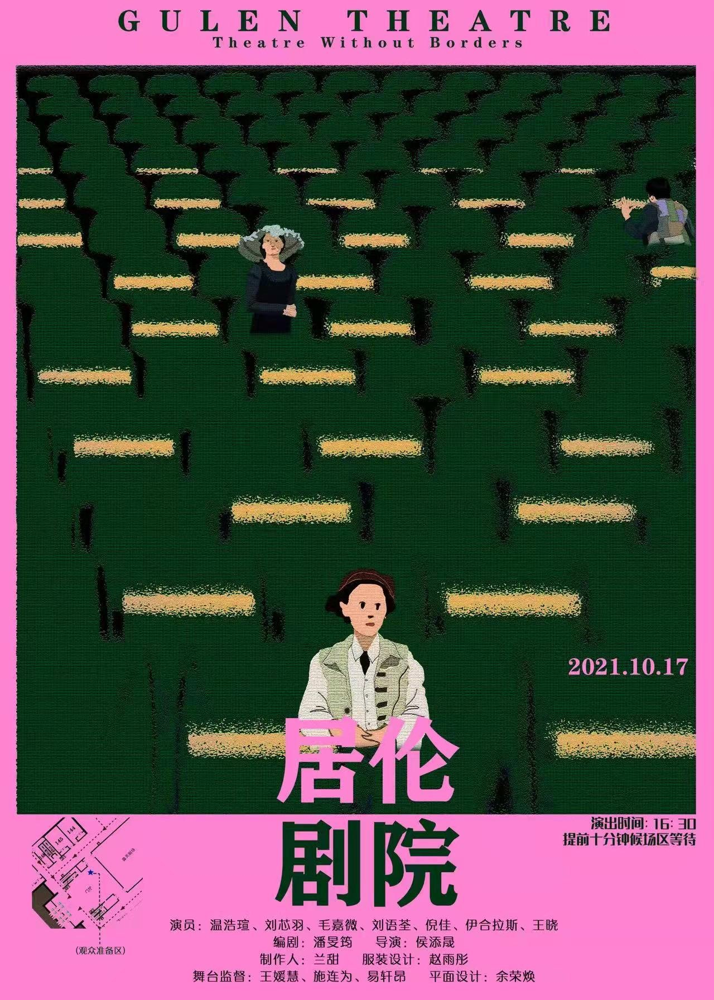
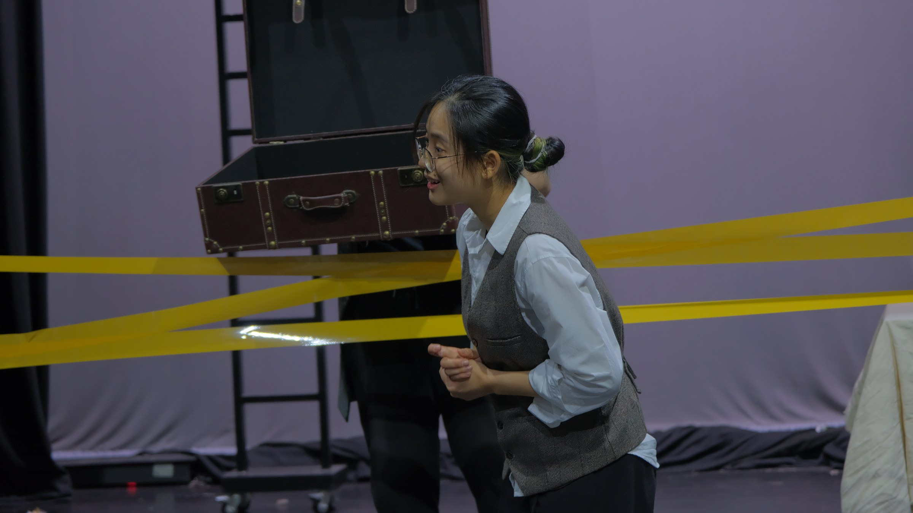
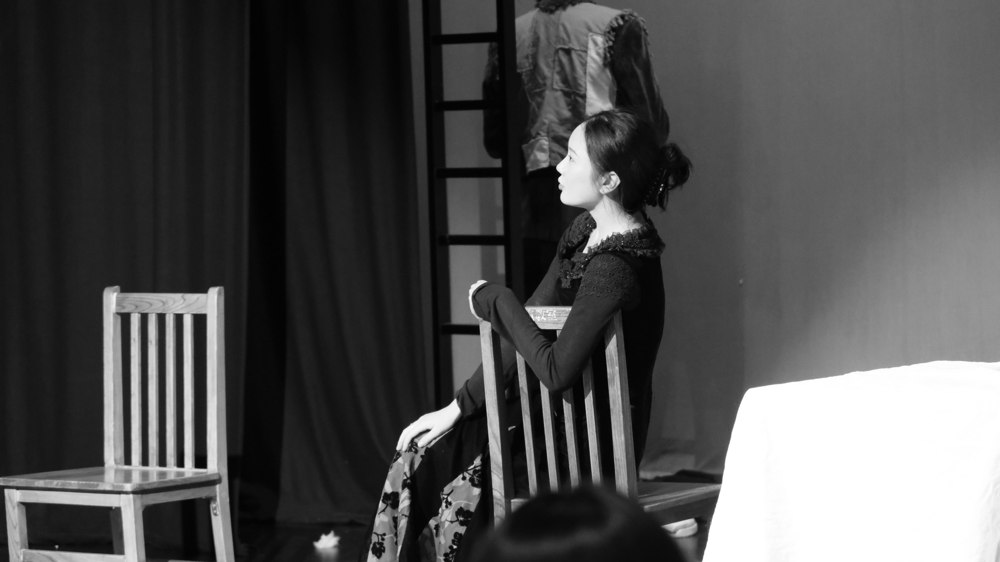
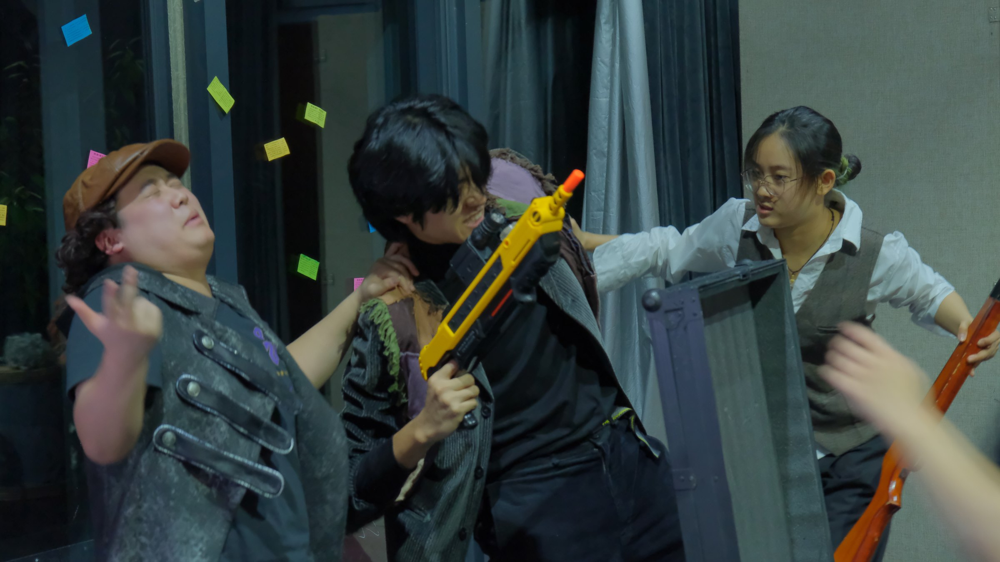
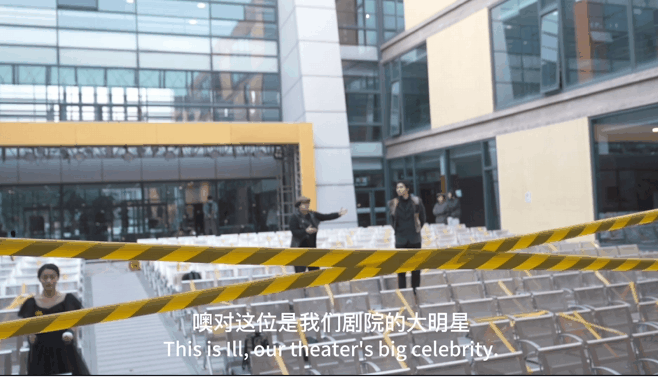
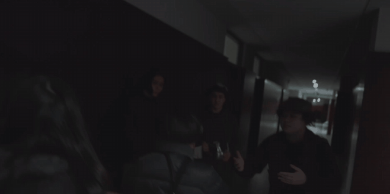

健康码入场Health-code entry
入场流程模拟疫情时期真实剧院的限制，观众需要展示“健康码”，让现实经验自然进入虚构空间。
The entry process recreated real pandemic-era restrictions, including the presentation of a “health code,” allowing a familiar real-world ritual to become part of the fiction.

《居伦剧院》创作于 2021 年疫情期间。彼时剧场长期受到停演、限流与线上化的冲击。作为戏剧专业的学生，我们不断面对一个问题：当人们已经习惯了电影、流媒体与线上娱乐，剧场还剩下什么不可替代的价值？
因此，我改编了迪伦马特的《老妇还乡》，将原作中衰败的“居伦小镇”改写为一座在疫情冲击下濒临倒闭的剧院。整场故事都发生在这座剧院内部，并把现实中的观众直接纳入叙事。
Gullen Theatre was written in 2021, at the height of the COVID-19 pandemic. Theatres had been heavily affected by closures, restrictions and the shift toward online performance. As drama students, we kept returning to one question: when audiences had grown accustomed to film, streaming and other forms of entertainment, what remained irreplaceable about theatre?
I adapted Dürrenmatt's The Visit, transforming the original rundown town of Güllen into a theatre struggling to survive the pandemic. The entire story unfolds within the theatre, with the real audience directly incorporated into the fiction.
一场看似为观众准备的演出，实际上只为等待一位亿万富翁的到来。
A performance that appears to be staged for its audience is, in fact, waiting for a single billionaire guest.
观众在剧院外等待入场，从售票处与忙乱的演员身上，逐渐看到这间剧院破败、混乱而又急于自救的状态。
While waiting outside the theatre, the audience encounters the rundown ticket booth, frantic actors and the theatre's chaotic attempt to keep itself alive.
亿万富翁克莱拉从观众席打断演出并登上舞台。她宣布愿意向剧院捐赠巨款，但条件是在这场演出结束前杀死昔日恋人、剧院明星演员伊尔。
Clara abruptly interrupts the performance from the audience, takes the stage, and offers the theatre a vast donation on one condition: her former lover and the theatre's star actor, Ill, must die before the performance ends.
经理直接向观众发起投票：杀死伊尔，还是放过他？最终演员们拿着玩具枪追逐伊尔，他倒下后被装上克莱拉带来的推车，随后被推离舞台。
The manager asks the audience to vote: kill Ill or spare him? The performers eventually pursue Ill with toy guns. After he falls, his body is loaded onto Clara's cart and pushed offstage.

剧本的角色、对白与情节都刻意采用夸张和荒诞的语气。对我而言，这种荒诞并不只是喜剧效果，它也对应了疫情期间人面对病毒、封锁、政策与经济压力时的无力感。
其中一个核心矛盾是：剧院员工不断高喊“谁来买下我们的剧院”，所有人都声称自己正在为观众演出，但整场表演真正服务的对象，却是一位有钱的资助者。
The characters, dialogue and plot deliberately adopt an exaggerated, absurd tone. For me, that absurdity is not only comic; it also reflects the helplessness people felt toward forces beyond their control during the pandemic.
One central contradiction is that the theatre staff loudly performs for “the audience,” while the entire event is ultimately staged to please a wealthy patron.



在《居伦剧院》中，我把“剧院本身”看作最重要的角色。它既是真实演出的空间，也是故事里那座濒临倒闭的虚构剧院。
观众同样承担双重身份：他们既是现实中的观众，也是故事中受邀来到剧院的一群人。因此，我希望尽可能减少“看戏”和“进入故事”之间的距离。
In Gullen Theatre, the theatre itself is the most important character. It functions both as the real performance venue and as the fictional rundown theatre inside the story.
The audience also carries a double identity: they are the real spectators, while simultaneously playing invited guests within the fiction. I therefore tried to reduce the distance between “watching a performance” and “entering the story.”
入场流程模拟疫情时期真实剧院的限制，观众需要展示“健康码”，让现实经验自然进入虚构空间。
The entry process recreated real pandemic-era restrictions, including the presentation of a “health code,” allowing a familiar real-world ritual to become part of the fiction.
座位之间保持距离，并用胶带封住不可使用的位置，让疫情留下的视觉符号直接成为舞台美术的一部分。
Seats were spaced apart and unusable seats were taped off, turning the visual language of pandemic restrictions into part of the scenography.

演员先用简单道具示范动作，再邀请观众模仿，使观众尽快进入一种“我也正在表演”的状态，而不是只坐在座位上观看。
Actors used simple props and invited the audience to imitate their actions, helping spectators enter a performative state rather than remaining passive observers.
